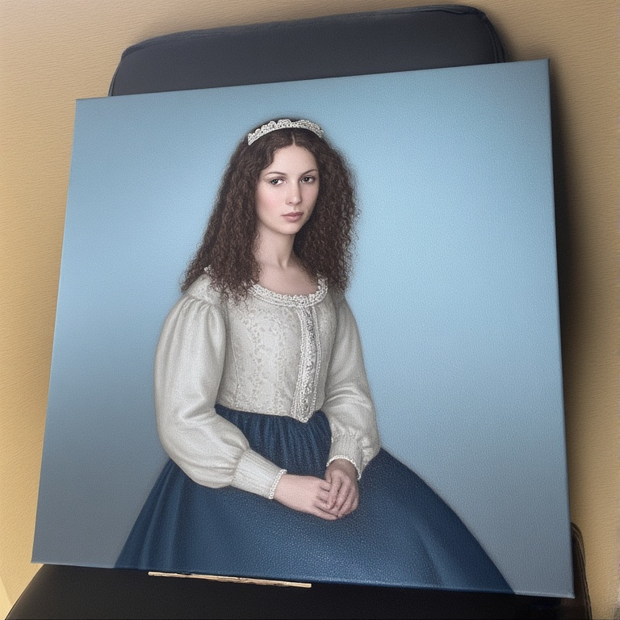
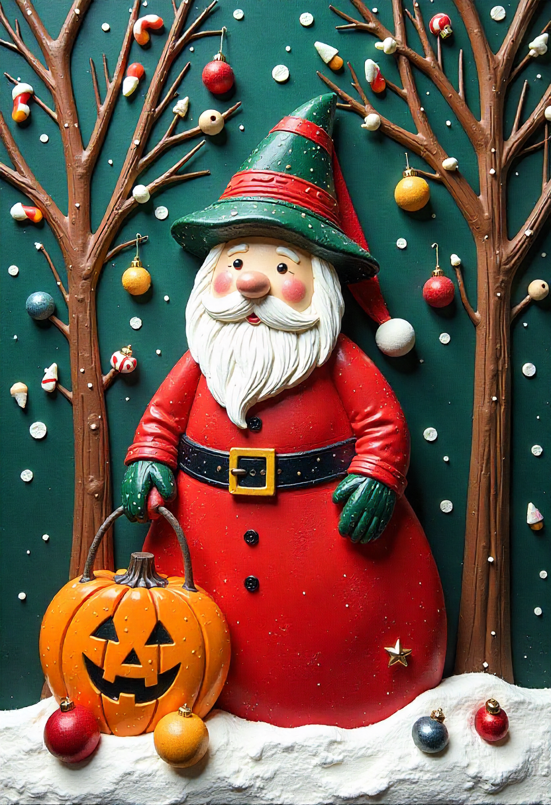
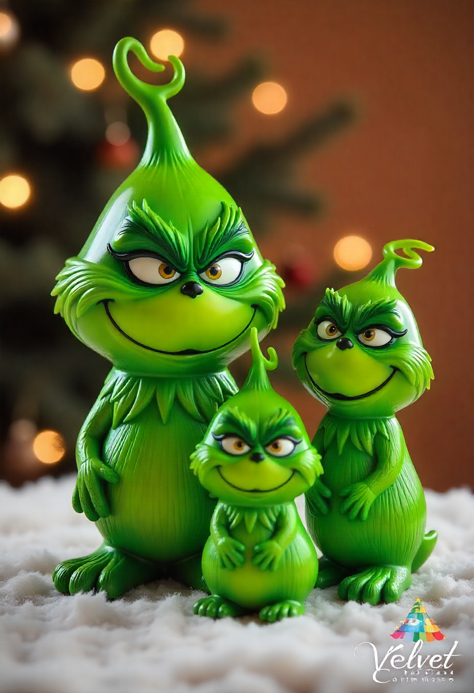

Painted portraits
People, pets, couples, families, landscapes and meaningful scenes, from small keepsakes to statement pieces.
Your photograph. Your story. Made by hand.
A pet, a loved one, a memory, a place, a mythological figure or an idea that exists only in your imagination can become a one-of-a-kind Velvet Charms creation.
Fotografia ta. Povestea ta. Realizată manual.
Un animal iubit, o persoană dragă, o amintire, un loc, o figură mitologică sau o idee care există doar în imaginația ta poate deveni o creație Velvet Charms unicat.




.png)

One subject, many possibilities
People, pets, couples, families, landscapes and meaningful scenes, from small keepsakes to statement pieces.
Portraits, pets, figurines, fantasy characters and symbolic pieces built by hand with dimensional detail.
Soft miniature animals, pet-inspired figures and character pieces shaped individually rather than mass produced.
Jewelry, boxes, décor, phone cases, lamps and keepsakes incorporating colors, flowers, symbols or personal references.
Handmade bags and wearable pieces personalized through size, palette, details, motifs and finishing choices.
If the creation is not listed in the catalogue, send the idea anyway. We can assess the material, complexity, price and timeframe individually.
Același subiect, multe posibilități
Persoane, animale de companie, cupluri, familii, peisaje și scene importante, de la mici amintiri la lucrări statement.
Portrete, animale, figurine, personaje fantasy și piese simbolice construite manual, cu detalii tridimensionale.
Animăluțe miniaturale, figurine inspirate de animalul tău și personaje modelate individual, nu produse în serie.
Bijuterii, cutii, decorațiuni, huse, lămpi și obiecte-amintire în care putem integra culori, flori, simboluri sau referințe personale.
Genți și accesorii realizate manual, personalizabile prin dimensiune, paletă, detalii, motive și finisaje.
Dacă ideea nu există în catalog, trimite-ne-o oricum. Putem evalua separat materialul, complexitatea, prețul și termenul de realizare.
From reference to finished piece
Need it for a meaningful date? Tell us when ordering. We will confirm what is realistically possible after checking the current production schedule.
De la fotografie la piesa finală
Ai nevoie de piesă pentru o dată importantă? Spune-ne la comandă. Confirmăm ce este realist după verificarea programului actual de producție.